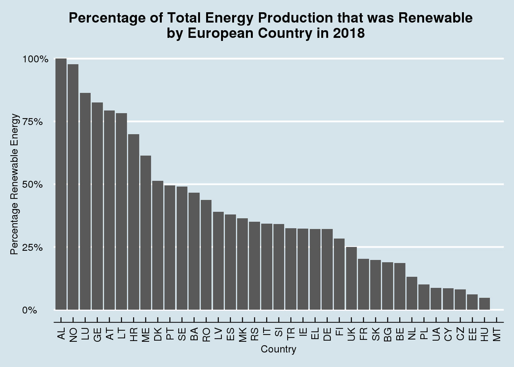

European Energy Usage: Clean Energy vs. Conventional
Using data that is available on the Tidy Tuesday website on European Energy, I will investigate the energy usage among European countries with an emphasis on which countries are the best at using renewable energy. I will be examining data from the energy_types.csv file from the Tidy Tuesday website. The data consists of 296 observations and 7 variables. The data displays each the energy production from each European country from 2016-2018 and breaks it down by how much energy was produced by conventional thermal, nuclear, hydroelectric, pumped hydroelectric, wind, solar, geothermal, and other.
The second dataset I will use to explore European Energy production is the country_totals.csv file from the Tidy Tuesday website. The data consists of 185 observations and 7 variables. The data displays the total energy consumption of each European country from 2016-2018 as well as the total energy production of each country.
For the purposes of this blog post Renewable Energy will be hydroelectric, pumped hydroelectric, wind, solar, geothermal, and other energy productions and clean energy will be renewable energy plus nuclear energy. # Question 1
Which European country had the largest percentage of their total energy production made up of renewable energy in 2018? Which European country had the largest percentage of their total energy production made up of clean energy? To find this, I made 3 separate data frames to summarize the total renewable energy, nuclear energy, and conventional thermal energy that each European Country used. I then joined the 3 data frames and selected the columns with the 2018 data to make one dataset with all of the summarized Energy data from 2018.
dat <- energy_types %>%
left_join(country_totals, by = c("country", "country_name")) %>%
rename(twenty_16.x = '2016.x', twenty_17.x = '2017.x', twenty_18.x = '2018.x') %>%
filter(type.x == c("Hydro", "Pumped hydro power", "Wind", "Solar", "Geothermal", "Other")) %>%
group_by(country) %>%
summarize(renew_2016 = sum(twenty_16.x), renew_2017 = sum(twenty_17.x), renew_2018 = sum(twenty_18.x)) ## Warning in type.x == c("Hydro", "Pumped hydro power", "Wind", "Solar",
## "Geothermal", : longer object length is not a multiple of shorter object lengthdat2 <- energy_types %>%
filter(type == "Conventional thermal") %>%
rename(twenty_16 = '2016', twenty_17 = '2017', twenty_18 = '2018') %>%
group_by(country) %>%
summarize(conventional_2016 = sum(twenty_16), conventional_2017 = sum(twenty_17), conventional_2018 = sum(twenty_18))
dat3 <- energy_types %>%
filter(type == "Nuclear") %>%
rename(twenty_16 = '2016', twenty_17 = '2017', twenty_18 = '2018') %>%
group_by(country) %>%
summarize(nuclear_2016 = sum(twenty_16), nuclear_2017 = sum(twenty_17), nuclear_2018 = sum(twenty_18))
data_18 <- country_totals %>%
left_join(dat, by = "country") %>%
left_join(dat2, by = "country") %>%
left_join(dat3, by = "country") %>%
filter(type == "Total net production") %>%
select(1, 2, 10, 13 , 16) %>%
mutate(total_2018 = renew_2018 + conventional_2018 + nuclear_2018)Next I used the dataset that I made with the summarized 2018 energy data to make 2 bar graphs that compare all the European Countries based on the percentage of their total energy output was made up of Renewable Energy and of Clean Energy in 2018, respectively.
ggplot(data_18, aes(x = country, y = renew_2018/total_2018)) +
geom_bar(stat = "identity") +
scale_y_continuous(labels = scales::percent) +
labs(x = "Country", y = "Percentage Renewable Energy") +
ggtitle("Percentage of Total Energy Production that is Renewable by European Country in 2018") +
theme_economist() +
theme(axis.text.x = element_text(angle = 90, hjust = 1, vjust = 0.5)) +
theme(plot.title = element_text(size = 11))
ggplot(data_18, aes(x = country, y = (renew_2018 + nuclear_2018)/total_2018)) +
geom_bar(stat = "identity") +
scale_y_continuous(labels = scales::percent) +
labs(x = "Country", y = "Percentage Clean Energy") +
ggtitle("Percentage of Total Energy Production that is Clean by European Country in 2018") +
theme_economist() +
theme(axis.text.x = element_text(angle = 90, hjust = 1, vjust = 0.5)) +
theme(plot.title = element_text(size = 11))
Question 2
Which European country has made the biggest shift towards renewable energy since 2016?
Question 3
Is there a correlation between the European countries with the biggest energy outputs and using more convential thermal energy?